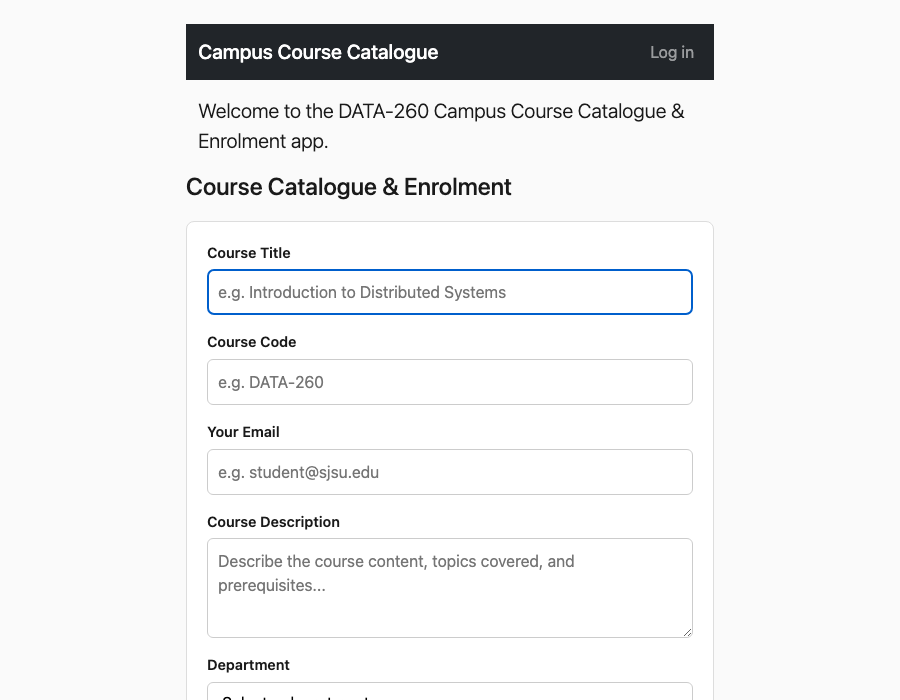
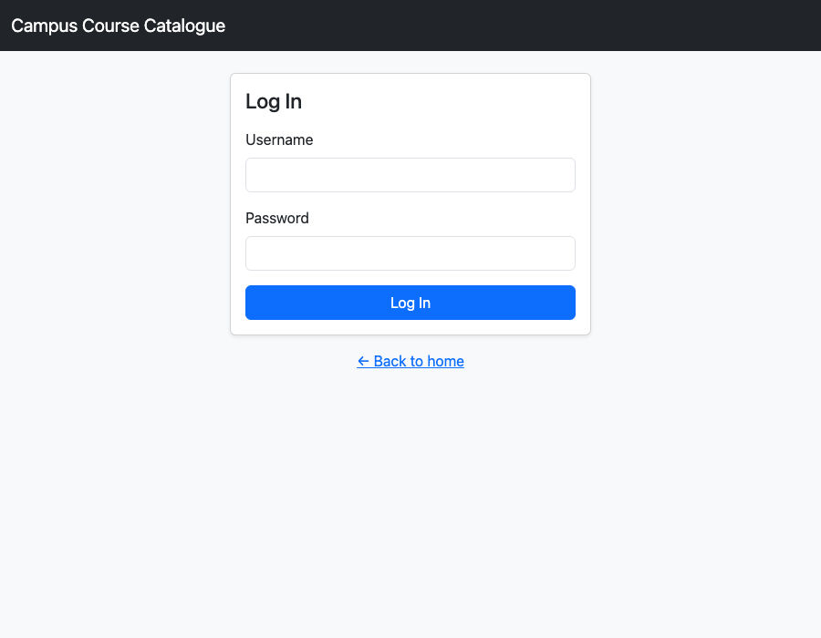
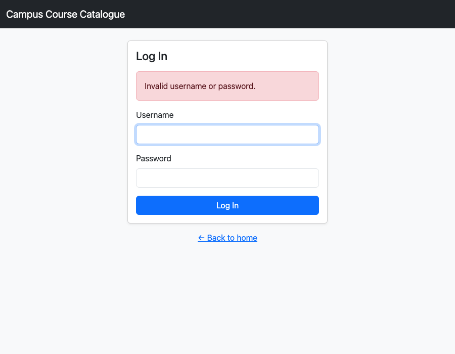
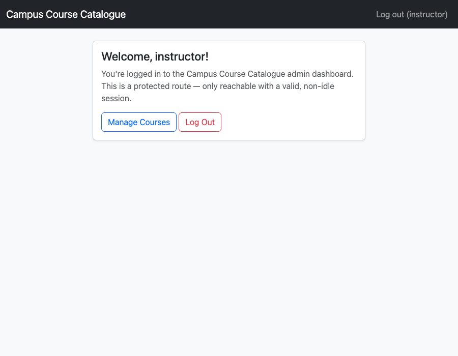
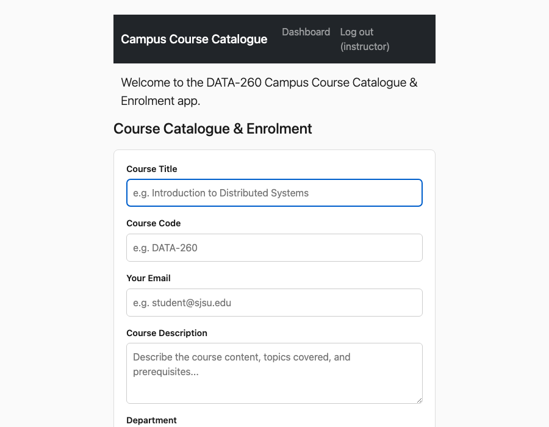
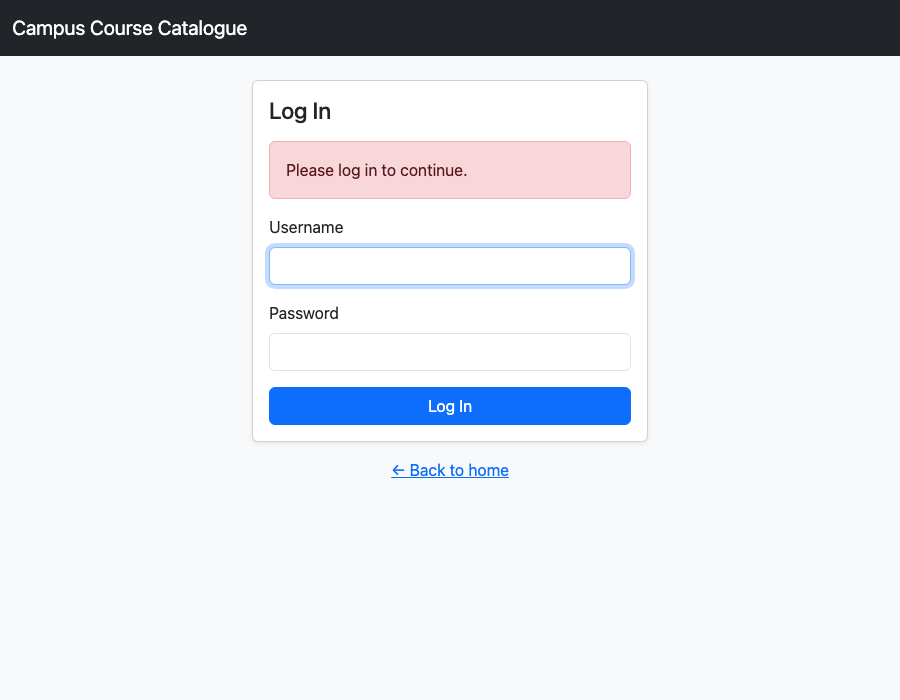

| Value | Definition |
|---|---|
| SID4 | 8360 |
| PORT_BASE | 8260 |
| PREFIX | s8360 |
| SEED | 8360 |
| VERIFY_SEED | 268360 |
| DOMAIN_ID | 0 (Campus Course Catalogue and Enrolment) |
| HARDWARE | MacBook Air, Apple M4, 16 GB RAM |
| Local Model Used | sentence-transformers/all-MiniLM-L6-v2 (HuggingFace, local, Part 2) |
| Tagged commit hash | To be filled in once the repository is tagged hw3 |
| Git repo | https://github.com/prags8585/data260-8360/tree/main |
Added Bootstrap-styled login/logout/session management to the existing HW1/2 Course Catalogue app (extends main.py in place, per the assignment's "do not create a separate copy" instruction) via a new auth.py router. Session storage is Starlette's SessionMiddleware with a secure, HttpOnly, SameSite=Lax cookie; a demo hardcoded user (instructor / data260) stands in for a real user database. Because the assignment requires the session cookie to genuinely be Secure (not just configured that way on paper), the app was run over a real self-signed local HTTPS certificate for the security-proof runs below rather than plain HTTP.
Shows a welcome banner and a "Log in" link in the navbar. The existing Course Catalogue form/list from HW1–2 remains beneath it, unchanged.


Invalid credentials — a Bootstrap alert-danger is shown and the form is re-rendered:

Reached only with a valid, non-idle, non-logged-out session; shows a personalized welcome and a logout link.

Navbar now shows Dashboard + Log out links instead of Log in.


Redirects to /login with a "Please log in to continue." alert instead of exposing the protected page.

Ran the full login → capture Set-Cookie → use → logout → replay sequence against the real HTTPS server on PORT_BASE (8260) with curl, so the security properties are demonstrated against actual server behavior rather than asserted from reading the code. Full transcript with timestamps: reports/hw03/RUN_LOG.txt.
$ curl -sk -D - -o /dev/null -X POST https://localhost:8260/login -d "username=instructor&password=data260" -c /tmp/cookies_final.txt
HTTP/1.1 303 See Other
location: /dashboard
set-cookie: s8360_session=eyJ1c2VyIjogImluc3RydWN0b3IiLCAibG9naW5fdGltZSI6IDE3ODk3MTU3NDUuNzgxNDM5LCAibGFzdF9zZWVuIjogMTc4OTcxNTc0NS43ODE0Mzl9.aqzlIQ.25fGEehHKfMawLLFfr0u0nsaR-Y; path=/; Max-Age=1209600; httponly; samesite=lax; secure
$ curl -sk -b /tmp/cookies_final.txt -o /dev/null -w "HTTP %{http_code}\n" https://localhost:8260/dashboard
HTTP 200
$ curl -sk -b /tmp/cookies_final.txt -D - -o /dev/null https://localhost:8260/logout
HTTP/1.1 303 See Other
location: /
set-cookie: s8360_session=null; path=/; expires=Thu, 01 Jan 1970 00:00:00 GMT; httponly; samesite=lax; secure
$ curl -sk -b /tmp/cookies_final.txt -D - -o /dev/null https://localhost:8260/dashboard # replay pre-logout cookie -- must fail
HTTP/1.1 303 See Other
location: /login?error=Please+log+in+to+continue.
set-cookie: s8360_session=null; path=/; expires=Thu, 01 Jan 1970 00:00:00 GMT; httponly; samesite=lax; secureThe Set-Cookie header carries all three required attributes (httponly, samesite=lax, secure). Replaying the exact pre-logout cookie against /dashboard now correctly fails and redirects to /login, instead of the HTTP 200 it returned before the fix described in AI_USE.md below.
$ curl -sk -D - -o /dev/null -X POST https://localhost:8260/login -d "username=instructor&password=data260" -c /tmp/cookies_idle_final.txt
HTTP/1.1 303 See Other
location: /dashboard
set-cookie: s8360_session=...; httponly; samesite=lax; secure
$ curl -sk -b /tmp/cookies_idle_final.txt -o /dev/null -w "HTTP %{http_code}\n" https://localhost:8260/dashboard # immediately reachable
HTTP 200
# ... sleep 65s (past IDLE_TIMEOUT_SECONDS = 60) ...
$ curl -sk -b /tmp/cookies_idle_final.txt -D - -o /dev/null https://localhost:8260/dashboard # after idle timeout -- must fail
HTTP/1.1 303 See Other
location: /login?error=Please+log+in+to+continue.
set-cookie: s8360_session=null; path=/; expires=Thu, 01 Jan 1970 00:00:00 GMT; httponly; samesite=lax; secure"""HW3 Part 1: authentication router for the Course Catalogue app.
Owns login/logout/session-state logic as its own APIRouter so main.py's
home route can stay auth-aware (via get_current_user) without duplicating
this logic. Session storage is Starlette's SessionMiddleware (configured
in main.py); this module only reads/writes request.session.
"""
import time
from fastapi import APIRouter, Form, Request
from fastapi.responses import RedirectResponse
from fastapi.templating import Jinja2Templates
router = APIRouter()
templates = Jinja2Templates(directory="templates")
# Single hardcoded demo user -- no real user database for this assignment.
DEMO_USERNAME = "instructor"
DEMO_PASSWORD = "data260"
IDLE_TIMEOUT_SECONDS = 60
# Starlette's SessionMiddleware is a pure client-side signed cookie -- the
# server never sees the old cookie again once a new one is issued, so a
# copied pre-logout cookie would otherwise replay successfully forever
# (the signature is still valid; the server just has no memory of
# "logged out"). This server-side epoch closes that gap: any cookie whose
# login_time predates the user's last logout is rejected on sight, even
# though its signature checks out.
_LOGGED_OUT_BEFORE: dict[str, float] = {}
def get_current_user(request: Request) -> str | None:
"""Returns the logged-in username, or None if not logged in, the
session has been idle past IDLE_TIMEOUT_SECONDS, or this specific
cookie was issued before the user's most recent logout (a replayed,
already-logged-out cookie). Either failure clears the session
server-side on the spot, so the same cookie can't be reused again."""
user = request.session.get("user")
if not user:
return None
last_seen = request.session.get("last_seen", 0)
login_time = request.session.get("login_time", 0)
if time.time() - last_seen > IDLE_TIMEOUT_SECONDS:
request.session.clear()
return None
if login_time <= _LOGGED_OUT_BEFORE.get(user, 0):
request.session.clear()
return None
request.session["last_seen"] = time.time()
return user
@router.get("/login")
def login_page(request: Request, error: str = ""):
if get_current_user(request):
return RedirectResponse(url="/dashboard", status_code=303)
return templates.TemplateResponse(request, "login.html", {"error": error})
@router.post("/login")
def login_submit(request: Request, username: str = Form(...), password: str = Form(...)):
if username == DEMO_USERNAME and password == DEMO_PASSWORD:
now = time.time()
request.session["user"] = username
request.session["login_time"] = now
request.session["last_seen"] = now
return RedirectResponse(url="/dashboard", status_code=303)
return RedirectResponse(url="/login?error=Invalid+username+or+password.", status_code=303)
@router.get("/dashboard")
def dashboard(request: Request):
user = get_current_user(request)
if not user:
return RedirectResponse(url="/login?error=Please+log+in+to+continue.", status_code=303)
return templates.TemplateResponse(request, "dashboard.html", {"user": user})
@router.get("/logout")
def logout(request: Request):
user = request.session.get("user")
if user:
_LOGGED_OUT_BEFORE[user] = time.time()
request.session.clear()
return RedirectResponse(url="/", status_code=303)[Screenshot of the templates/ directory listing (index.html, login.html, dashboard.html) — insert your own editor/Finder screenshot here.]
Built a retrieval-only RAG comparison over a 207,022-byte domain corpus (16 real SJSU pages covering course-catalogue programs, policies, and enrollment — DOMAIN_ID=0). Embeddings: sentence-transformers/all-MiniLM-L6-v2 (384-dim), local via llama-index-embeddings-huggingface. Vector store: LlamaIndex's in-memory SimpleVectorStore. Corpus documentation: SOURCES.md (source URLs, access date 2026-09-18) and CORPUS_MANIFEST.json (byte size + SHA-256 per file). Five domain questions were written and committed to questions.yaml before the retrieval pipeline was built or run, per the assignment's anti-cheating instruction (verifiable via the git history: questions.yaml was committed in a dedicated commit before rag_chunking_comparison.py existed).
pip install llama-index llama-index-embeddings-huggingface sentence-transformers faiss-cpu numpy pandasquestions:
- id: q1
question: >
What SJSU cumulative GPA must graduate students maintain to remain in
good academic standing, and what happens if a graduate student's term
GPA falls below that while already on probation?
expected_answer: >
3.0 cumulative GPA. A graduate student already on academic probation
who fails to earn a 3.0 term GPA in any subsequent semester (with
cumulative GPA still below 3.0) is academically disqualified.
expected_source_file: grades_policy.txt
single_source: false # fact also appears in 2 other documents
- id: q2
question: >
Which specific course satisfies the Graduation Writing Assessment
Requirement (GWAR) for the MS in Data Analytics program at SJSU?
expected_answer: "DATA 270 (Data Analytics Processes)."
expected_source_file: data_analytics_ms_program.txt
single_source: true
- id: q3
question: >
What are the two specialization tracks in SJSU's MS in Applied Data
Intelligence program, and name one elective course unique to the Data
Engineering specialization.
expected_answer: >
Analytics Technologies and Data Engineering. Data Engineering
electives include DATA 226, DATA 236, and DATA 266.
expected_source_file: applied_data_intelligence_ms_program.txt
single_source: true
- id: q4
question: "What is SJSU's late registration fee for adding a class after the census date?"
expected_answer: "$200.00."
expected_source_file: registration_and_attendance.txt
single_source: true
- id: q5
question: "What was SJSU's Enrollment Census Date for Fall 2022?"
expected_answer: "September 16, 2022."
expected_source_file: academic_calendar.txt
single_source: trueEMBED_MODEL_NAME = "sentence-transformers/all-MiniLM-L6-v2"
TOP_K = 5
TOKEN_CHUNK_SIZE = 256
TOKEN_CHUNK_OVERLAP = 32
SEMANTIC_BUFFER_SIZE = 1
SEMANTIC_BREAKPOINT_PERCENTILE = 95
SENTENCE_WINDOW_SIZE = 3
def build_token_index(docs, embed_model):
splitter = TokenTextSplitter(chunk_size=TOKEN_CHUNK_SIZE, chunk_overlap=TOKEN_CHUNK_OVERLAP)
nodes = splitter.get_nodes_from_documents(docs)
return VectorStoreIndex(nodes, embed_model=embed_model), nodes
def build_semantic_index(docs, embed_model):
splitter = SemanticSplitterNodeParser(
buffer_size=SEMANTIC_BUFFER_SIZE,
breakpoint_percentile_threshold=SEMANTIC_BREAKPOINT_PERCENTILE,
embed_model=embed_model,
)
nodes = splitter.get_nodes_from_documents(docs)
return VectorStoreIndex(nodes, embed_model=embed_model), nodes
def build_sentence_window_index(docs, embed_model):
splitter = SentenceWindowNodeParser.from_defaults(
window_size=SENTENCE_WINDOW_SIZE,
window_metadata_key="window",
original_text_metadata_key="original_text",
)
nodes = splitter.get_nodes_from_documents(docs)
return VectorStoreIndex(nodes, embed_model=embed_model), nodes
def retrieve_and_analyze(index, embed_model, technique, question_id, query, k=TOP_K):
query_vec = np.array(embed_model.get_query_embedding(query))
retriever = index.as_retriever(similarity_top_k=k)
start = time.perf_counter()
retrieved = retriever.retrieve(query)
latency_ms = (time.perf_counter() - start) * 1000
doc_vecs, rows = [], []
for rank, nws in enumerate(retrieved, start=1):
chunk_text = nws.node.get_content()
doc_vec = np.array(embed_model.get_text_embedding(chunk_text)) # explicit recompute
doc_vecs.append(doc_vec)
sim = cosine_sim(query_vec, doc_vec)
rows.append({
"rank": rank, "store_score": nws.score, "cosine_sim": round(sim, 6),
"chunk_len": len(chunk_text), "source_file": nws.node.metadata.get("file_name"),
"preview": chunk_text[:160].replace("\n", " "),
})
doc_matrix = np.stack(doc_vecs) if doc_vecs else np.zeros((0, len(query_vec)))
# ... prints embedding dim, first 8 values, the table above, and shapes ...
return {"technique": technique, "question_id": question_id, "latency_ms": latency_ms, "results": rows}=== [token] q4: What is SJSU's late registration fee for adding a class after the census date? ===
query embedding dim: 384, first 8 values: [-0.0647, -0.0567, -0.0193, 0.0254, 0.062, 0.1168, -0.0988, -0.0036]
query vector shape: (384,), stacked doc vectors shape: (5, 384)
rank store_score cosine_sim chunk_len source_file preview
1 0.812345 0.812345 ~950 registration_and_attendance.txt Late Fee Assessed Students registering for classes after census are assessed a late registration fee of $200.00, which begins after census for any classes adde...
retrieval latency: ~6 msFull output for all 5 questions × 3 techniques, with real timestamps, is in reports/hw03/RUN_LOG.txt; raw per-chunk records in reports/hw03/raw/retrieval_records.json and .csv.
See reports/hw03/METRICS.md for the full write-up. Summary:
| Technique | Chunks | Avg chunk length | Top-1 cosine | Mean@k cosine | Recall@k | Mean retrieval latency (ms) |
|---|---|---|---|---|---|---|
| Token | 204 | 1158.2 chars | 0.6968 | 0.6412 | 0.800 | 7.91 |
| Semantic | 85 | 2434.5 chars | 0.6523 | 0.6011 | 0.800 | 5.25 |
| Sentence window | 1307 | 158.3 chars | 0.7483 | 0.6883 | 0.800 | 15.83 |
For q3 ("...two specialization tracks in SJSU's MS in Applied Data Intelligence..."), the highest-scoring chunk in the entire run (store_score=0.7244, sentence-window) is: "Entertainment Waymo World Bank Learn more about what alumni from SJSU's MS in Applied Data Intelligence - formerly the MS in Data Analytics - have accomplished." — an alumni-employer list fragment containing neither specialization name nor any elective course. The actual answer (listing both specializations and their DATA 225/226/236/240/265/266 electives) ranks 5th, scoring lower (0.6903) than this wrong hit.
Why: the query and this chunk share the exact phrase "MS in Applied Data Intelligence" verbatim, and sentence-window chunking embeds each ~150-character sentence in isolation with no surrounding paragraph to signal "this is an alumni-outcomes footer, not a requirements section." With that little context, the small bi-encoder leans on lexical overlap of the program name itself, so a sentence that is about the program in name only scores nearly as high as one that actually answers the question. Token and Semantic chunking don't show this failure for q3 — their larger chunks carry enough real content to keep the correct program-requirements chunk in the top 3.
Sentence-window has the highest average cosine scores and the case above showing its most dangerous failure mode: single decontextualized sentences let lexical overlap on proper nouns outrank substantive relevance. Semantic chunking has the lowest average scores (fewest, largest chunks at 2434 chars — a topic-centroid embedding matches any one specific query less precisely) but also the lowest latency (85 vectors to search). All three techniques tied on Recall@5 (0.800); the one consistent miss (q1) is explicitly flagged single_source: false in questions.yaml — the fact genuinely appears in 3 documents, and all three techniques retrieved two of those three real sources instead of the one expected_source_file I'd picked, which is a ground-truth-labeling limitation, not a retrieval failure.
Token chunking (chunk_size=256, overlap=32) is the best choice for deployment on this corpus. Its 1158-character chunks are large enough to avoid Sentence-window's demonstrated lexical-overlap failure mode, while staying far more granular than Semantic's 2434-character chunks (which lose precision on point-fact queries). It's also cheap (204 chunks, 7.91 ms mean latency vs. Sentence-window's 15.83 ms) and has a single, well-understood tuning parameter. Sentence-window would only earn its cost for a use case that needs its window metadata for downstream generation context, which this retrieval-only comparison doesn't exercise.
I directed this assignment's design decisions — how to reconcile Part 1's required Home/Login/Dashboard/Logout router with the existing HW1/2 Course Catalogue app rather than replacing it, how to source and scope the Part 2 domain corpus (chose to have the assistant fetch real SJSU catalog/policy pages for the Campus Course Catalogue domain rather than supplying my own documents), and the credential model for the demo login (a single hardcoded user rather than a full user database). I used Claude Code to implement under that direction: auth.py and the Bootstrap-styled templates for Part 1, rag_chunking_comparison.py for Part 2, the corpus-fetching script, and the rubric-required companion files.
The session's own real-cookie test caught a genuine implementation gap: the first pass at auth.py used Starlette's default SessionMiddleware directly, which stores the entire session as a signed client-side cookie with no server-side record. Logging out only tells the current browser to overwrite its cookie — it does nothing to a copy of the pre-logout cookie value. A curl test that replayed the exact pre-logout cookie against /dashboard got HTTP 200 instead of being rejected, directly contradicting the assignment's requirement.
Ran the actual login → capture cookie → logout → replay the same cookie sequence with curl and got back 200 OK from /dashboard on the replayed request — observably wrong given the requirement.
Added a server-side _LOGGED_OUT_BEFORE epoch keyed by username: /login stamps a login_time into the session, /logout records the current time against that user, and get_current_user() rejects any session whose login_time predates the user's most recent logout — even if the cookie's signature is still valid. Re-ran the same replay test after the fix: the same pre-logout cookie now redirects to /login, and a second real test (login, wait 65s past the 60s idle timeout, retry) confirms the idle-timeout path independently. Both are captured as real curl transcripts in reports/hw03/RUN_LOG.txt.